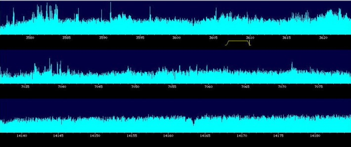
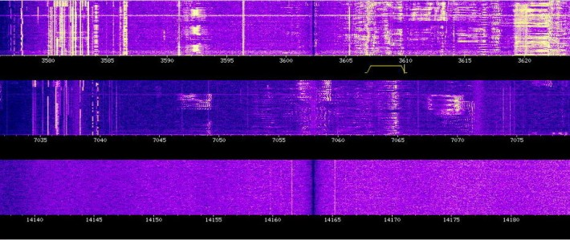
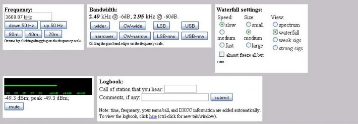

Сайт — архив
Никогда не думал, что буду писать эту запись. Но тем не менее стоит признать, что теперь этот сайт — архив и воспоминания нашего обучения 2004—2010 годов на физфаке. Конечно, теперь не будет новых записей, не будет обновлений.
Сначала я думал, что получится передать этот сайт следущим группам РЭ, но почему-то это не получилось сделать. Так что пусть наш блог будет ещё одним хорошим местом в интернете.
P.S. Исправлю ошибки на сайте и оставлю всё как есть. Долгой жизни блогу :-)
4 марта 2011 @ Eunix
Новости
СтудВесна ЯрГУ 2009
24 апреля 2009 @ Eunix
Забавное, Новости
У Яндекса появилась подробная карта Ярославля
Надо о чём-нибудь написать. Итак, у Яндекса теперь есть подробная карта Ярославля: и улицы, и номера домов. Ещё у Яндекса есть API, в том числе и Static API.
Например, у меня получилось сделать карту расположения купусов физического факультета Ярославского государственного университета им. П.Г. Демидова:

Расположение корпусов физического факультета ЯрГУ
Здорово выглядит, правда? :-)
20 апреля 2009 @ Eunix
Новости
Информация
p>Давно не появлялась на нашем блоге официальная информация… Но вот, ее время пришло!
1. До субботы (!) нужно заполнить и прислать на armandy@yandex.ru Анкету выпускника
2. В течение ближайших двух недель подойти в деканат (любой день до 13-00) и проверить вкладыш с оценками к диплому
3. До конца мая забрать медицинские карточки из поликлиники
4. До конца апреля сдать 2000 руб на выпускной вечер. Можно сдавать мне, Соне Шарай, Ане Петрушовой, Сереже Метелькову
zp8497586rq
26 марта 2009 @ armandy
Новости, Студенты
SDR On Line
Наверно многие из нас слышали о радиоспорте, но мало кто имеет возможность послушать в живую эфир на любительских диапазонах. Однако интернет кажется решил и эту проблему. Здесь можно в реальном времени послушать любительские радиостанции в диапазонах 20, 40 и 80 метров, принимаемые на приёмник, расположенный в университете Твент в Энсхэде, Нидерланды. Реализация подобного сервиса стала возможной благодаря использования технологии SDR, при которой основная обработка сигнала проводится ресурсами компьютера, работающего с выбранной полосой эфира после переноса её на «нулевую частоту» и оцифровки. Интерфейс очень прост и отражает возможности этого метода в части наглядности процесса приёма — настройка на выбранную станцию обеспечивается простым перетаскиванием ползунка, на всплеск в спектре, порождаемый сигналом, либо указанием точной частоты:

Также представлен режим водопада, отражающий поведение спектра с течением времени:

С помощью веб интерфейса можно выбрать тип модуляции и добиться наилучшего приёма сигнала, поэксперементировав с полосой пропускания фильтра.

Более подробно о технологии SDR можно узнать например на сайте rw3ps.qrz.ru
13 февраля 2009 @ yura
Новости
dasISTfak ‘t на Первом 30 января в 21:30
Впервые, как говорят, команда КВН нашего университета попала в премьер лигу. Это — dasISTfak ‘t. А посмотреть на них можно уже сегодня, 30 января, на Первом канале в 21:30.

Так выглядит dasISTfak 't
Уже есть интересная запись на местном телеканале НТМ:
Читать дальше »
30 января 2009 @ Eunix
Новости
Фотоконкурс «Лови момент»
В прошлом году я уже писал о каком-то фотоконкурсе от Молодёжного совета Ярославля, в котором, правда, почти никто из нас и не участвовал.
В этом году Молодёжный совет снова проводит фотоконкурс. В этот раз он называется «Лови момент»:
13 декабря 2008 года в 12:00 в музее истории города Ярославля состоится третий творческий фотоконкурс «Ярославль моими глазами».
Мероприятие пройдет в двух номинациях. За победу в первой номинации смогут побороться команды в составе не более 5 человек, подготовившие мультимедийную фотопрезентацию и представившие ее на очном этапе конкурса. Участникам же второй необходимо будет успеть до 22 ноября сдать в оргкомитет конкурса не более 5 черно-белых и цветных снимков. Кстати общая тема для работ молодых фотолюбителей в этом году звучит как «Лови момент».
Более подробная информация размещена у них на сайте (адрес сайта очень созвучен… с представительством компании Microsoft в Ярославле).
7 декабря 2008 @ Eunix
Новости
Экзаменационные новости
- Экзамен по СтатРФ будет завтра, 20 числа, в 11-00
- Из вопросов по ЭД СВЧ исключены 29, 30, 33, 52, 53, 54. Номера по этому списку
- Артемова, Винтер Основы ЭД СВЧ (0,6 Mb) скачать
zp8497586rq
19 июня 2008 @ armandy
Новости
Конкурс ярославских сайтов
Оказывается, в Ярославле проходит конкурс региональных интернет-ресурсов. Наверное, для того, чтобы улучшить текущее плачевное состояние ярнета. Хотя на самом деле они пишут:
Целью смотра является популяризация и поддержка лучших Интернет-сайтов, повышение информационной культуры населения, побуждение к активному применению возможностей сети Интернет, информационных технологий в повседневной жизни, межличностных контактах, крупном и малом бизнесе, органах государственного и муниципального управления и образовательных учреждениях.
Здорово  стоит поучаствовать.
стоит поучаствовать.
7 мая 2008 @ Eunix
Новости
Турнир по интеллектуальным играм для молодежных команд
Увидел в одной социальной сети объявление о Турнире по интеллектуальным играм для молодёжных команд г.Ярославля:
Ярославский клуб интеллектуальных игр приглашает тебя пошевелить мозгами!!!
Собирай свою команду и приходи!
В программе — вопросы «Что, где, когда?», интеллектуальное ассорти, командная «Своя игра» и призы!
Ждем заявок на e-mail!
P.S. место проведения уточняется
Никаких подробностей больше нет.
5 мая 2008 @ Eunix
Новости